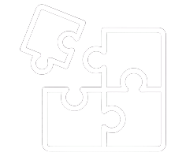

Decomposição
A Decomposição é um dos pilares fundamentais do pensamento computacional. Ela nos ajuda a entender e resolver problemas complexos ao dividi-los em partes menores e mais gerenciáveis. Ao aplicar a decomposição, conseguimos enxergar cada parte individualmente, tornando mais fácil encontrar soluções específicas, identificar padrões e criar estratégias eficientes.
Comece já

Para Iniciar
O que você precisa saber antes de iniciar seus estudos
Sobre este Curso
- Nível Iniciante
- Duração estimada:
- 3 módulos práticos
- Área: Pensamento Computacional / Lógica
- 100% online e gratuito
- Voltado para uso em sala de aula e desenvolvimento docente
Público-Alvo
- Finalistas no curso de Licenciatura em Computação ou Pedagogia, e Professores do Ensino Técnico e Ensino Superior
- Educadores interessados em inovação pedagógica
- Profissionais de educação que desejam aplicar conceitos de pensamento computacional em sala
Pré-Requisitos
- Não é necessário conhecimento prévio em programação ou tecnologia
- Ter acesso a um computador ou tablet com internet
- Vontade de aprender e aplicar novas estratégias em sala de aula
O que você vai aprender
01 O que é decomposição e por que ela é essencial.
02 Como aplicá-la em diferentes contextos (educacional, cotidiano e tecnológico).
03 Exemplos práticos que mostram como dividir grandes desafios em pequenas etapas facilita o aprendizado e a resolução de problemas.